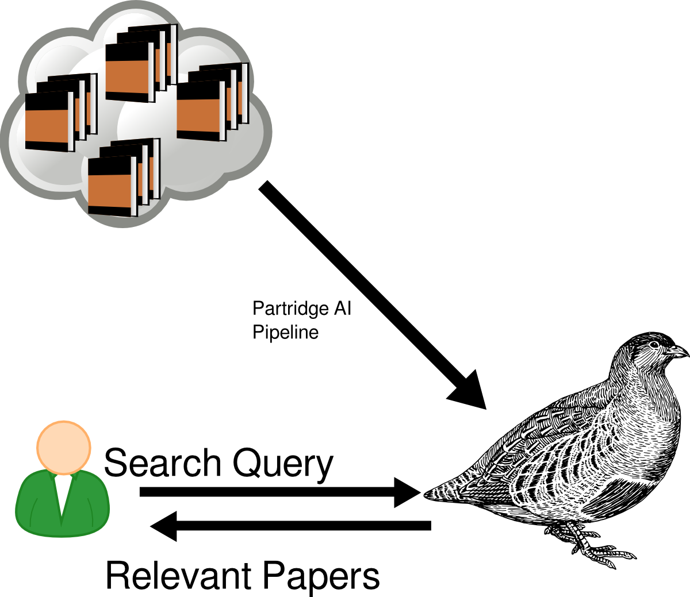
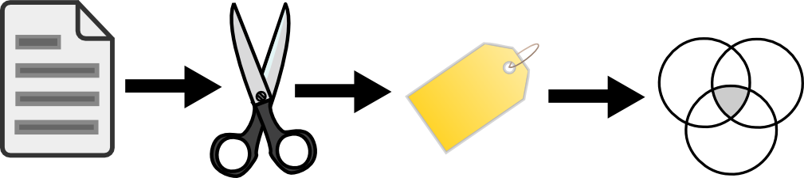
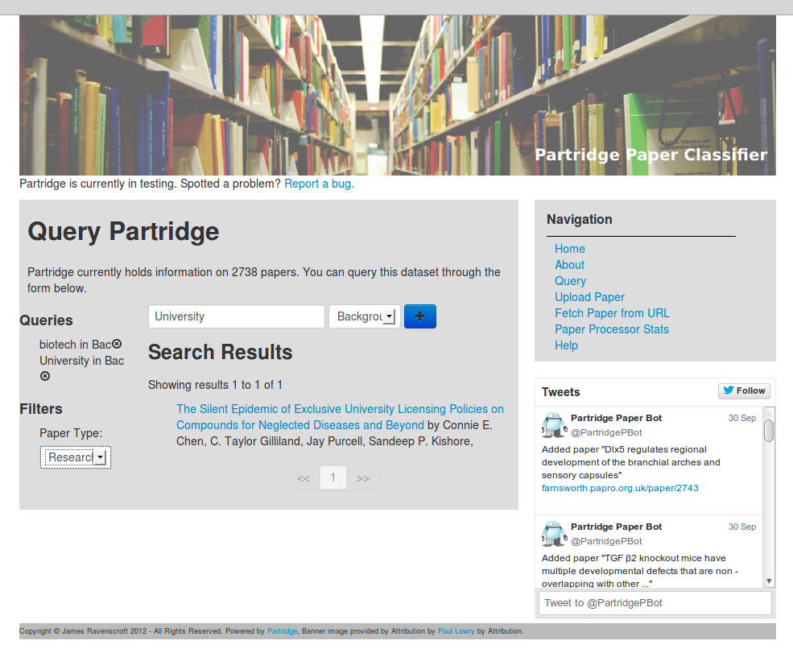
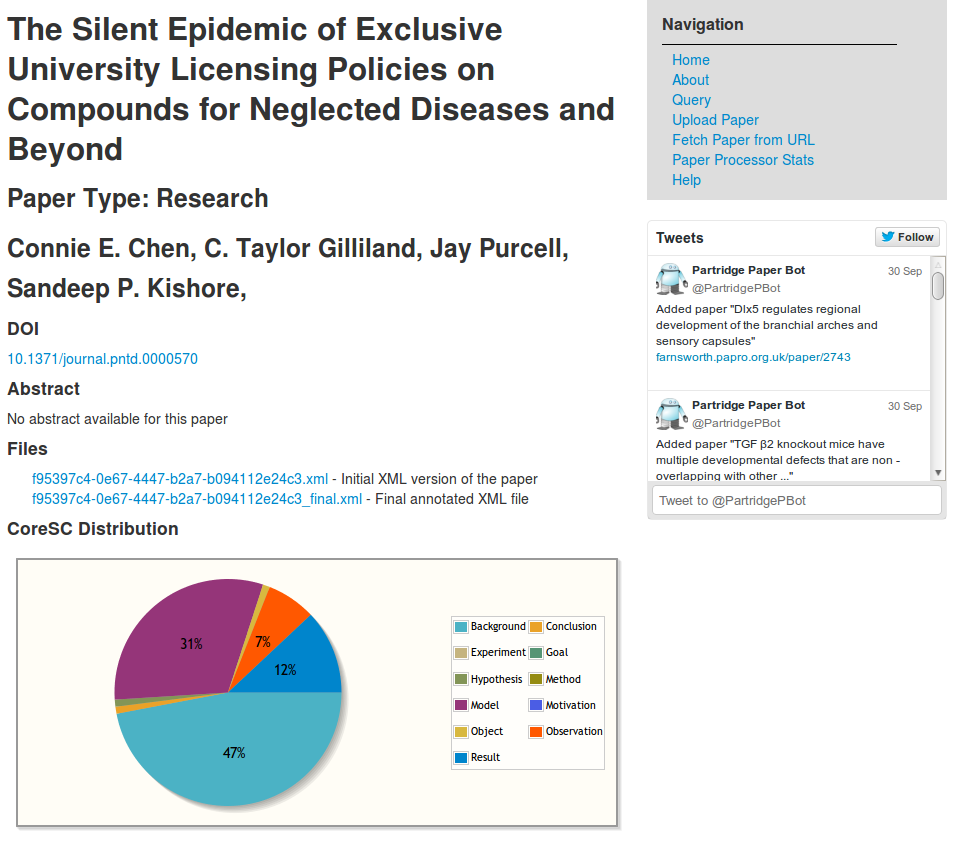

Your browser doesn't support the features required by impress.js, so you are presented with a simplified version of this presentation.
For the best experience please use the latest Chrome, Safari or Firefox browser.

Partridge: An Intelligent Literature Analysis And Recommendation
Suite http://papro.org.uk
James Ravenscroft, Maria Liakata, Amanda Clare
“...there have been an estimated 15 million medical academic articles
published so far, and 5000 journals published every month... picking out
what’s relevant is a gargantuan task.”
Ben Goldacre, Bad Science,
2008, p97

Image Source: "Anatomy of open access publishing: a study of longitudinal development and internal structure", Mikael Laakso and Bo-Christer Björk, 2012 October 22. doi: 10.1186/1741-7015-10-124 (Under Creative Commons By-Attribution License)
The Partridge Process

The Processing Pipeline

Tokenizing and Sentence Splitting
- Use text-sentence to automatically tokenize all
text in paper
- Rule-based system takes care of difference between abbreviation and the end of a sentence automatically
- Document is reconstructed sentence-by-sentence, sentence boundaries stored in document file
text-sentence - bitbucket user trebor74h - https://bitbucket.org/trebor74hr/text-sentence/src
Annotating with SAPIENTA
- SAPIENTA is a system for Automatically adding CoreSC
Annotations to papers on a sentence-by-sentence level.
- CoreSC - Core Scientific Concept - used to indicate the type of content each sentence contains. More on this shortly.
- Self-contained machine learning/classification system trained using a set of ~200 papers manually annotated with CoreSC tags.
- Papers that were previously 'split' are now automatically annotated with CoreSC tags
SAPIENTA - Maria Liakata - http://www.sapientaproject.com/
CoreSC Types and Examples
- There are 11 CoreSCs as identified by Liakata et al.
- Hypothesis, Motivation, Goal, Object,
Background, Method, Experiment, Model, Observation, Result and
Conclusion
-
An example hypothesis sentence:
It is expected that the results of clustering the data points will show clear grouping for this dataset
-
Example background sentence:
The perceptron algorithm was first invented by Frank Rosenblatt in 1957
Paper Type Classification
- Hypothesised that there is a correlation between CoreSC makeup of papers and paper 'type'
- Used PLoSOne "types" filter to derive a list of 'types' to be investigated. These were: Case Study, Correspondence,
Essay, Opinion, Perspective, Research, Review, Viewpoint
- The journal labels seem almost arbitrary. Suspect that they're chosen by authors at submission
- We manually came to consensus on which ones to use and tried to omit synonymous ones.
Paper Type Classification
Visualisation of Randomly sampled Research (left) and Review (right) papers from the corpus:

We now had a couple of thousand papers of known 'types' and their respective CoreSC tag distributions. Suitable as
ML training data?
Paper Type Classification
- Trained a random forest classifier using the corpus accumulated from the Annotation pipeline
- a

Using Partridge (http://farnsworth.papro.org.uk/)


Submitting Papers
- Please upload your (open access) papers to Partridge. We accept SciXML, Pubmed XML and PDF
- We use PDFX to convert PDF to compatible XML
- Bookmarklet for cross-site submission from PLOS and Pubmed
[1] PDFX - Alexander Constantin - http://pdfx.cs.man.ac.uk/